A2-5 How to change fiber sensor amp setting of Input shuttle. (How to return to shipment setting) ( 5 )
Fiber sensor amp adjustment for NS-8080
Setting of fiber sensor amp (E3X-DA)for Input shuttle device detection.
Part Names of the fiber sensor AMP
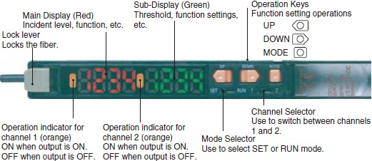
Setting of ch1
Switch the channel 1/2 selector switch to “1”.
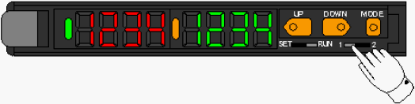
[Setting of threshold]
1. Switch the SET/RUN selector switch to “RUN”.
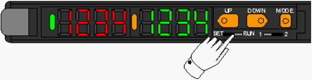
2. Press the UP/DOWN key to adjust threshold.
(The threshold set to 600 at shipment.)
UP key; Threshold value will become big.
Amount of light received Threshold value
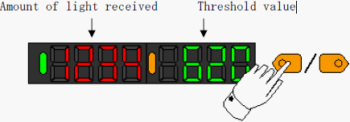
DOWN key; Threshold value will become small.
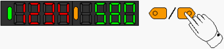
3. About 5 second passed with no operation UP/DOWN key, sub display value
return to amount of light received vale.
[Standard setting]
1. Switch the SET/RUN selector switch to “SET”.
Amount of light received vale/Threshold vale are displayed.
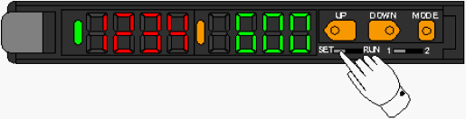
2. Press the MODE button once to change [0.Operation mode].
Choose [DON] (Dark on) by UP/DOWN key.
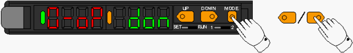
3. Press the MODE button once to change [1.Detectinig function].
Choose [STND] (Standard) by UP/DOWN key.
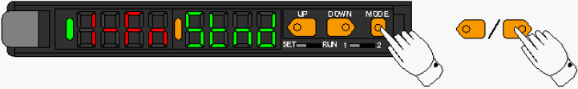
4. Press the MODE button once to change [2.Timer function].
Choose [----] (Timer function invalidity) by UP/DOWN key.
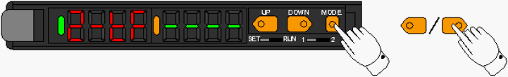
5. Press the MODE button once to change [3.Twin output].
Choose [2OUT] (Twin channel output) by UP/DOWN key.
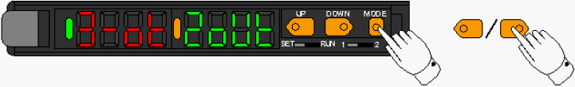
6. Press the MODE button once to change [4.Mode key setting].
Choose [PTUN] (Power tuning execution) by UP/DOWN key.
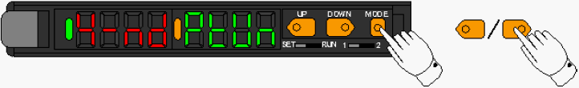
7. Press the MODE button once to change [Power tuning targeted value].
Cheese the power tuning targeted level by UP/DOWN key.
(The power tuning targeted value set to 1000 at shipment.)
UP key; Targeted value will become big.
DOWN key; Targeted value will become small.
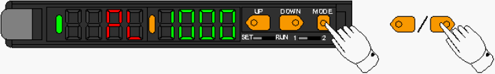
8. Press the MODE button once to change [5.Display change].
Choose the [ch1/ch2 display] by UP/DOWN key.
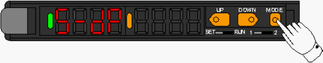
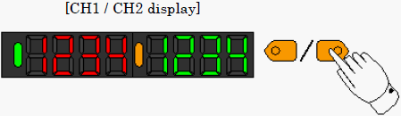
9. Press the MODE key once to change [6.Display direction].
Choose the [D123] (normal display) by UP/DOWN key.
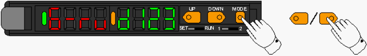
10. Press the MODE key once to return to beginning display.
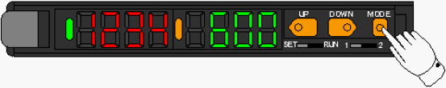
11. Switch the SET/RUN selector switch to “RUN”.
Setting is finish.
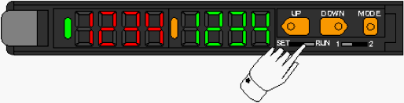
Setting of ch2
Switch the channel 1/2 selector switch to “2”.
The ch2 has to set same as ch1 setting.
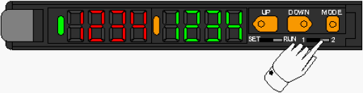